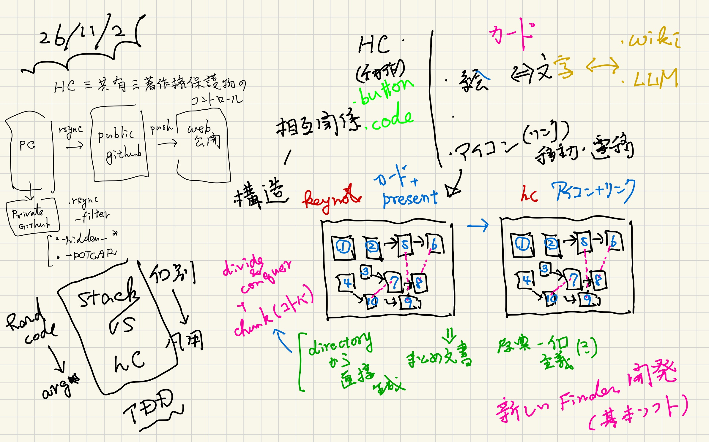

HyperCard (vs (or) ~=) other systems
Table of Contents
prev_button up_button next_button
 |
1. HyperCardと他のsystem
『HyperCardって何』というのは，一言では難しくて， 他の既存システムと比べるとはっきりしてきます．
2. HyperCard vs Wiki
知識の共有ということでは，WikiPediaがわかりやすいですよね． これは典型的なHyperCardの派生物． リンクでカードを遷移するいうのが，リンクの始まり．
でも，Wiki baseのシステムを使っていて， 「何度も同じ長い文章を繰って，読むのはいつも一箇所」 ってないですか？ LLMも文章が冗長になりガチです． それは，知識レベルの違う万人に間違いなく伝えるため． Wikiって巻物なんですよね．
それに対してHyperCardは浮世絵． 文字に対して絵で， ブロマイドみたいに， 何度も見直して頭に焼き付ける対象．
3. HyperCard ~= Keynote
HyperCardの発展形の一つがプレゼンソフト． ここではKeynotoで紹介します．
Keynoteでプレゼンすると，当たり前だけど，一続きになりますよね． でも，構想を錬るときはブロックで考えていません？ Preziという有料のプレゼンソフトがあって\cite{Prezi}， これは遷移とか概略・詳細を視覚的に提供してくれます． 問題は，Preziの中でしかそういう機能が使えず， 共有が難しくなること．
Keynoteも少し工夫するとPrezi的なプレゼンが可能になります． カードを書き出して，それを何かのソフトに貼り付けて動かす． 私はGoodNote上で手でやっていますが， 名工大の小林先生に iPad純正のフリーボードには， 「特定の領域に順番にフォーカスする」機能があること を教えてもらいました． そうするとカード間の相互関係，つまり 包含，拡張，概要，詳細が視覚化できます． それをWeb上で提供しようというのがHyperCardシステムのキモの一つ． つまり，
- Keynote = Card + Presentation
- HyperCard = Icon + Link
という構図が成り立ちます．
4. HyperCard ~= Directory 構造
HyperCardではお互いの相互関係を
Directory構造とFile拡張子とHiddenFiles
の既約によって構築する事を目指しています． そして，HyperCardのcanvas.htmlやまとめ文書の 自動生成を実現しようとしています． 実際は手で修正していますが．．． でも雛形(templates)あるいは足場(scaffolds)は作れるので， そんなのがあるのとないのとでは作業時間が大幅に違います．
つまりは，基本ソフトとなる 「新しいFinder」を構築・開発しているとも言えます． 我々は，気がつかない間に，MicrosoftとAppleの不毛な特許合戦で 少しいびつな物に慣らされてますので．．．
5. HyperCard vs Stack
HyperCardシステムで作られる個別の知識のまとまりをStackと 名付けています． 書類が山積みになっているアイコンです．それに変えよう． Stackを構築するのにRubyでcodeを作って， Rakefile(MakefileのRuby版)で計算，ファイル操作の 機能を作っています． 個別の時には，directory/fileのpathを直接指定した hard codeをしていて， 繰り返しのpatternが現れてくると汎化してHyperCardに 取り込むという流れでcodingを進めています．
これは，Kent Beckが提唱しているTDD\cite{Beck_TDD}を Objectレベルよりも大きな cla, systemレベルで実装する事を目論んでいます． そういう開発手法も，HyperCardのStack交換の仕組みから 派生した開発法だと思っています．
6. HyperCard vs Coding
実装してないのが，ButtonとCoding環境です． HyperCardではButtonで色々な動作が表現されていました． そしてHyperTalkという独自言語を 編集，デバッグする環境が内蔵されてました．
我々が開発しているHyperCardでは， Terminal上のCLAとEditor(batcat)で代替させています． そのレベルでいじるのはProgrammerだから， 馴染んだ環境/言語が良いんですよね．
7. HyperCard ~= 著作物のコントロール
そして共有です．HyperCardのStack交換法として， Floppy Diskで販売されていました． Netの時代なので，GitHubとかが良さそうですが， UserにとってはWebで直接見えて，操作できるのが良いですよね． なのでHyperCardではURLへ登録する手順があります． Web serverが動いていたら，Stack directoryごと rsyncを掛けます．
この時問題になるのが著作物の制御． これをHyperCardでは.rsync_filterという設定ファイルで行います． 一部を示すと
> cat ../.rsync_filter
# バックアップ(emacs)や一時ファイルを除外
- *~
# OSの隠しファイルを除外
- .DS_Store
#- Thumbs.db
# 特定のディレクトリ（referencesディレクトリ）を除外
- references/
- gradings/
- hidden_*/
- .git/
# 特定の拡張子のファイル（key, pdfファイル）を除外
- POTCAR
です．Codexに聞くと，デフォルトで全pdfを除外して， +で許可物を登録しろとなるのですが， 人が制御するには逆がいいと今ところ考えています．
最小のconfiguration設定を 公開制御(.rsync_filter)と公開設定(.hc_config.yaml)で行って
- rake rsync_public # public directoryへ
- rake push # web serverへ
で同期を行っています． このorig_dir, pub_dir, push_dir三段構えは， gitのアイデアから来ています． 元と中間状態が存在するので確認やrm -rfしてからのやり直しが容易です． 履歴なしでいつでもtidyな最新版にできます．
8. References
- Prezi
- Prezi Inc., https://prezi.com/ (2026/11/2 accessed).
- Beck_TDD_j
- 「テスト駆動開発」, KentBeck, オーム社(2017).
- Beck_TDD_e
- “Test Driven Development by Example”, Kent Beck, Pearson Education Inc.(2003).